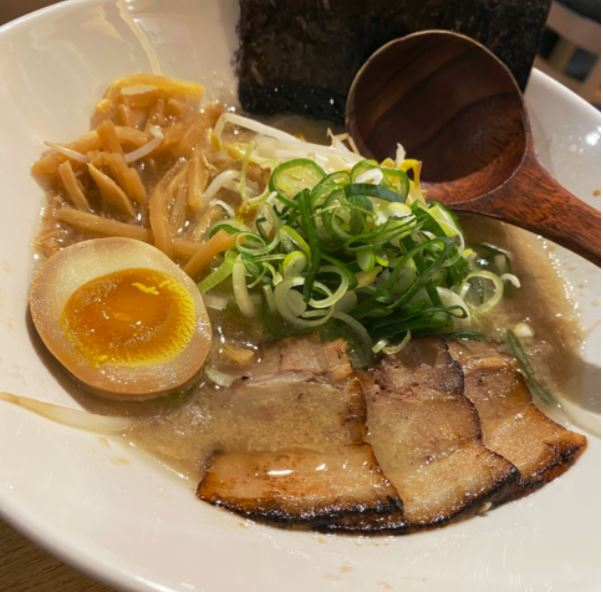

<DOCTYPE html>
    <html>
        <head>
            <script src="https://kit.fontawesome.com/f4dacc2b8e.js" crossorigin="anonymous"></script>
            <title>라이후쿠</title>
                <link rel="stylesheet" href="../../css/shop.css">
                <meta name="viewport" content="width=90%, height=90%, user-scalable=yes">

        </head>
        <body>
            <div class ="go-home">
                <a href="https://phw-plain.github.io">
                    
                </a>
            </div>
            <div class="left-bar">
                <div class="wrapper">
                    <div class="item">
                      <div class="polaroid">
                        <div class="caption"><i style="color: rgb(255, 208, 0);" class="fas fa-crown"></i> 돈코츠 라멘 7000</div>
                      </div>
                    </div>
                  
                    <div class="item">
                      <div class="polaroid">
                        <div class="caption">돈코츠 라멘bb</div>
                      </div>
                    </div>
                </div>
            </div>
            <div class="main-board">
                <div class="top">
                    <p class="top_main">라이후쿠</p>
                    <p class="top_serve">수연이(개발자)가 강추하는 맛집❗</p>
                </div>
                <div class="middleandbottom" >
                    <span style="float: left;">
                        <span style="float: top;">
                            <div class="middle">
                                <ul style="list-style:none; padding-top: 110px; padding-left: 120px; margin-top: -50px;">
                                    <li><i class="fas fa-clock"></i> 11:30 - 21:30</li>
                                    <li><i class="fas fa-shoe-prints fa-rotate-270"></i> 10분</li>
                                    <li><i class="fas fa-phone-alt"></i> 070-4036-2063</li>
                                    <li><i class="fas fa-calendar-minus"></i>매주 월요일 휴무</li>
                                </ul>
                            </div>
                        </span>
                        <span style="float: bottom;">
                            <div class="map">
                                <iframe src="https://www.google.com/maps/embed?pb=!1m18!1m12!1m3!1d3166.6820157898223!2d126.93420221504353!3d37.46822913751019!2m3!1f0!2f0!3f0!3m2!1i1024!2i768!4f13.1!3m3!1m2!1s0x357c9fc024fec799%3A0x19971837e25f58bd!2z65287J207ZuE7L-g!5e0!3m2!1sko!2skr!4v1613660590967!5m2!1sko!2skr"
                                width="250" height="250" frameborder="0"  allowfullscreen="" aria-hidden="false" tabindex="0" 
                                style="border:0; padding-top: 210px;"></iframe>
                            </div>
                        </span>
                    </span>
                    <span style="float: right; margin-left: -180px; margin-top: -55px; margin-bottom: 300px;">
                        <div class="bottom">
                            <div class="menu">
                                <i class="fas fa-utensils"></i> 가게메뉴
                            </div>
                            <div class="menu_list">
                                <span style="float: left;">
                                    <ul style="list-style:none; padding: 0;">
                                        <strong>라멘</strong>
                                        <li>돈코츠 라멘<br></li>
                                        <li>카라이멘<br></li>
                                        <li>쿠로라멘<br></li>
                                        <li>미소라멘<br></li>
                                        <li>츠케멘<br></li><br>
                                        <strong>추가</strong>
                                        <li>면추가<br></li>
                                        <li>차슈추가<br></li>
                                        <li>계란추가<br></li>
                                        <li>공기밥<br></li>
                                    </ul>
                                </span>
                                <span style="float: left; margin-left: 100px;">
                                    <ul style="list-style:none; padding: 0;">
                                        <br><li>7.0<br></li>
                                        <li>7.5<br></li>
                                        <li>7.5<br></li>
                                        <li>7.5<br></li>
                                        <li>8.5<br></li><br><br>
                                        <li>1.0<br></li>
                                        <li>2.0<br></li>
                                        <li>1.0<br></li>
                                        <li>0.5<br></li>
                                    </ul>
                                </span>
                            </div>
                        </div>
                    </span>
                </div>
            </div>
        </body>
    </html>